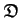
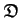

Next: 6.7 The new model-free Up: 6. Model-free analysis Previous: 6.5 The methodology of Contents Index
Ever since the original Lipari and Szabo papers (Lipari and Szabo, 1982b,a), the question of how to obtain the model-free description of the system has followed the route in which the diffusion tensor is initially estimated. Using this rough estimate, the model-free models are optimised for each spin system  , the best model selected, and then the global model
, the best model selected, and then the global model
 of the diffusion model

with each model-free model
of the diffusion model

with each model-free model
 is optimised. This procedure is then repeated using the diffusion tensor parameters of
is optimised. This procedure is then repeated using the diffusion tensor parameters of
 as the initial input. Finally the global model is selected. The full protocol is illustrated in Figure 6.2.
as the initial input. Finally the global model is selected. The full protocol is illustrated in Figure 6.2.
![\includegraphics[width=0.8\textwidth, bb=0 0 437 523]{images/model_free/init_diff_est.eps.gz}](img219.png) |